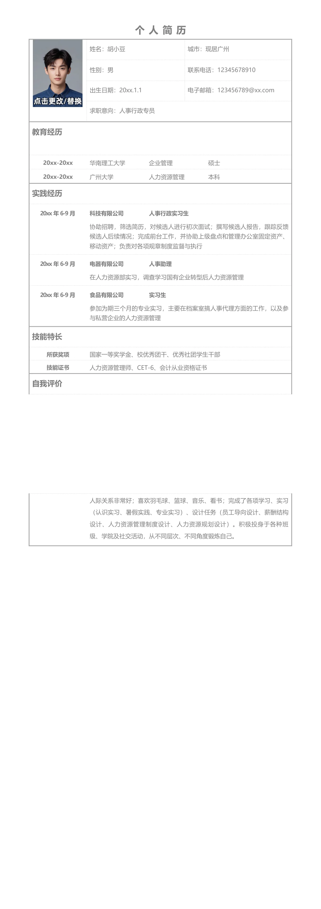

姓名：胡小豆
城市：现居广州
性别：男
联系电话：12345678910
出生日期：20xx.1.1
电子邮箱：123456789@xx.com
求职意向：人事行政专员
教育经历
20xx-20xx
华南理工大学 企业管理 硕士
20xx-20xx
广州大学 人力资源管理 本科
实践经历
20xx 年6-9 月
科技有限公司 人事行政实习生
协助招聘，筛选简历，对候选人进行初次面试；撰写候选人报告，跟踪反馈
候选人后续情况；完成前台工作，并协助上级盘点和管理办公室固定资产、
移动资产；负责对各项规章制度监督与执行
20xx 年6-9 月
电器有限公司 人事助理
在人力资源部实习，调查学习国有企业转型后人力资源管理
20xx 年6-9 月
食品有限公司 实习生
参加为期三个月的专业实习，主要在档案室搞人事代理方面的工作，以及参
与私营企业的人力资源管理
技能特长
所获奖项
国家一等奖学金、校优秀团干、优秀社团学生干部
技能证书
人力资源管理师、CET-6、会计从业资格证书
自我评价
个人简历
人际关系非常好；喜欢羽毛球、篮球、音乐、看书；完成了各项学习、实习
（认识实习、暑假实践、专业实习）、设计任务（员工导向设计、薪酬结构
设计、人力资源管理制度设计、人力资源规划设计）。积极投身于各种班
级、学院及社交活动，从不同层次、不同角度锻炼自己。